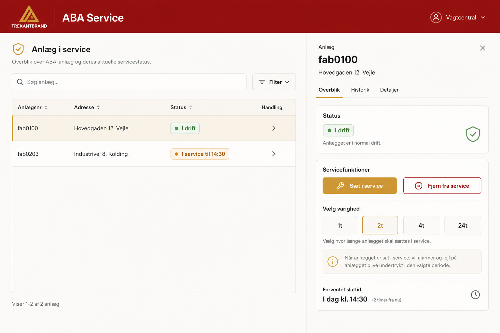
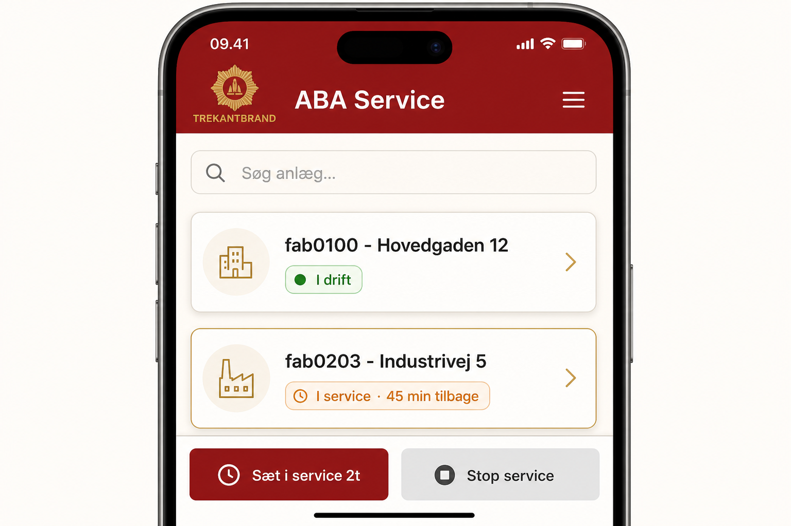

TrekantBrand · Brandvæsenet
ABA Service
Nyt system til at sætte automatiske brandalarmeringsanlæg i service — via web, SMS og telefonintegration.
Formål: Sikker og sporbar håndtering af service-tilstand på ABA-anlæg
Målgruppe for dette dokument: Vagtcentral, montører, anlægsejere og ledelse
Version: Udkast · Juni 2026
Hvad er ABA Service?
ABA Service er et selvstændigt webbaseret system, der gør det nemt at sætte automatiske brandalarmeringsanlæg (ABA) i service — og tage dem ud igen — med fuld logning og adgangskontrol.
I dag: Service-håndtering kræver adgang til flere systemer og manuelle processer.
Med ABA Service: Én fælles løsning til vagtcentral, montører og anlægsejere — tilgængelig fra computer og mobil, samt via SMS.
Systemet kommunikerer med TrekantBrands eksisterende anlægs-API og har sin egen database til brugere, adgang og historik. Design og brugeroplevelse følger det kendte BAS-udtryk.
Hvem kan bruge systemet?
| Brugergruppe |
Adgang |
Typisk brug |
| Vagtcentral |
Alle anlæg |
Sætte anlæg i service under arbejde, kontrollere status og se hændelseslog |
| Montør |
Alle anlæg |
Service under installation, test og fejlsøgning i marken |
| Anlægsejer |
Kun egne anlæg |
Sætte eget anlæg i service ved vedligehold — fx via SMS |
| Administrator |
Fuld styring |
Oprette brugere, tildele anlæg og administrere adgang |
Brugergrænseflade — computer
Vagtcentralen og montører arbejder typisk fra en større skærm med overblik over mange anlæg.

Illustration: Dashboard med søgning, status og handlingsknapper
Funktioner på web
- Søg og find anlæg — på anlægsnummer, adresse eller kundenummer
- Se status — om anlægget er i normal drift eller i service
- Sæt i service — med valgfri varighed (1, 2, 4, 24 timer, brugerdefineret eller ubegrænset)
- Fjern fra service — når arbejdet er afsluttet
- Se hændelseslog — sidste 20 hændelser, sidste 24 timer eller valgfri periode
- Tilføj kommentar — dokumentér hvad der er foregået
Brugergrænseflade — mobil
Montører og anlægsejere kan betjene systemet direkte fra telefonen — store knapper og tydelig status.

Illustration: Mobilvisning med kort-baseret liste og hurtige handlinger
Mobilvisningen er optimeret til touch: anlæg vises som kort med tydelig statusfarve, og de vigtigste handlinger er altid let tilgængelige.
Sådan sættes et anlæg i service (web)
1
Log ind
Brugeren logger ind med personlige oplysninger.
2
Find anlæg
Søg på anlægsnummer eller adresse.
3
Vælg varighed
Med eller uden tidsbegrænsning.
4
Bekræft
Anlæg sættes i service og handlingen logges.
Alle handlinger registreres med tidspunkt, bruger og kilde (web, SMS eller telefon). Det giver sporbarhed og mulighed for efterfølgende kontrol.
SMS-betjening
Anlægsejere og autoriserede brugere kan sætte anlæg i service via SMS — uden at åbne en browser.
Sådan virker det
Hver bruger har et personligt SMS-kodeord og et registreret telefonnummer. SMS'en valideres mod ABA Services egen brugerdatabase — kun godkendte brugere med adgang til det pågældende anlæg kan udføre handlinger.
Eksempler på SMS-kommandoer
secret123 fab0100 service start
secret123 fab0100 service start 2
secret123 fab0100 service stop
secret123 fab0100 status
HJÆLP
Start service
Angiv kodeord, anlægsnummer og ønsket varighed i timer. Uden angivet tid bruges 1 time som standard.
Stop service
Anlægget tages ud af service med det samme, og brugeren modtager en bekræftelse.
Automatiske SMS-beskeder
- Ved start — bekræftelse med varighed og udløbstidspunkt
- 15 minutter før udløb — påmindelse med mulighed for at forlænge
- Ved forlængelse — ny bekræftelse med opdateret udløbstid
- Ved afslutning — bekræftelse når anlægget er taget ud af service
Forlængelse: Brugeren kan sende en ny service start-besked med ønsket antal timer, mens anlægget allerede er i service. Systemet forlænger automatisk og sender ny bekræftelse.
Hændelseslog
For hvert anlæg kan brugeren se hvad der er sket — både i ABA Service og i anlæggets alarmlog.
Sidste 20 hændelser
Hurtigt overblik over de seneste begivenheder på anlægget.
Sidste 24 timer
Alt hvad der er sket det seneste døgn.
Valgfri periode
Vælg start- og slutdato for mere detaljeret gennemgang.
Kommentarer
Tilføj noter til loggen — fx årsag til service eller udført arbejde.
Integration med telefonsystemer
ABA Service tilbyder et internt API, så telefonsystemer og andre systemer kan:
- Søge og hente anlægsstatus
- Sætte anlæg i service og fjerne dem igen
- Hente hændelseslog
- Modtage indgående SMS via webhook
Dette gør det muligt at integrere service-håndtering i eksisterende vagtcentral-arbejdsgange uden manuel indtastning i flere systemer.
Sikkerhed og sporbarhed
- Personligt login til web — med rollebaseret adgang
- SMS kræver både kodeord og registreret telefonnummer
- Anlægsejere ser kun egne anlæg — vagtcentral og montører ser alle
- Alle handlinger logges med bruger, tidspunkt og kilde
- Kommunikation med anlæg sker via TrekantBrands sikre API
Implementering i faser
1
Web MVP
Login, søgning, sæt/fjern service, grundlæggende log.
2
Log & API
Fuld logvisning og API til telefonsystemer.
3
SMS
SMS-betjening med automatiske beskeder og påmindelser.
4
Finpudsning
Admin-værktøjer, sikkerhed og optimering.